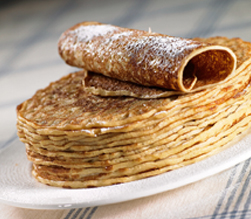

Het favoriete gerecht van Tim:

Mijn favoriete gerecht is pannenkoeken met bacon en kaas, klinkt dubbel op wat het zeker ook is!
Het is mijn favoriete gerecht omdat het goed vult, veel smaak heeft en ook nog eens makkelijk te maken is.
Ik zal je in deze pagina uit gaan leggen hoe je het maakt plus het recept zelf.
De geschiedenis van de pannenkoek
Historici vermoeden dat pannenkoeken niet door één persoon of volk zijn uitgevonden,
maar in verschillende landen, onafhankelijk van elkaar, zijn ontstaan.
De eerste pannenkoeken werden gemaakt met gedroogde zaden en bloemen
die gemengd werden met melk en eieren en vervolgens op hete stenen werden gebakken.
De pannenkoeken heette in Amerika vroeger eerst "hoecake", omdat ze op deze platte schep gebakken werden.
Al gauw kreeg het de naam "pancake".
Het recept
Dit zijn alle ingrediënten die je nodig hebt om een pannenkoek met bacon en kaas te bakken(let op dit is voor 4 personen):
- Kaas (hoeveelheid eigen keus)
- Bacon (hoeveelheid eigen keus)
- 250 gram bloem
- 1 mes puntje zout
- 2 grote eieren
- 0,5 l melk
- bakboter
Bereidingswijze
Ik zal je nu vertellen hoe je het moet maken stap voor stap.
- Doe de bloem met het zout, de eieren en de helft van de melk
in een kom en meng met de garde/mixer tot een glad beslag.
- Meng er de resterende melk door en laat het beslag circa 30 minuten rusten.
- Verhit een klontje boter in een koekenpan met een dikke bodem
en een anti-aanbaklaag.
- Schep een dun laagje beslag in de pan en draai de pan rond
zonder dat het beslag gelijkmatig over de bodem kan uitlopen.
- Leg de bacon op de pannenkoek.
- Laat de pannekoek op middelhoog vuur circa 3 minuten bakken tot
de onderkant gekleurd is en de bovenkant droog is.
- Draai de pannenkoek om en leg de kaas op de bovenkant.
- Laat de onderkant nog circa 1 minuut goudbruin bakken.
- Haal de pannenkoek uit de pan en je bent klaar!